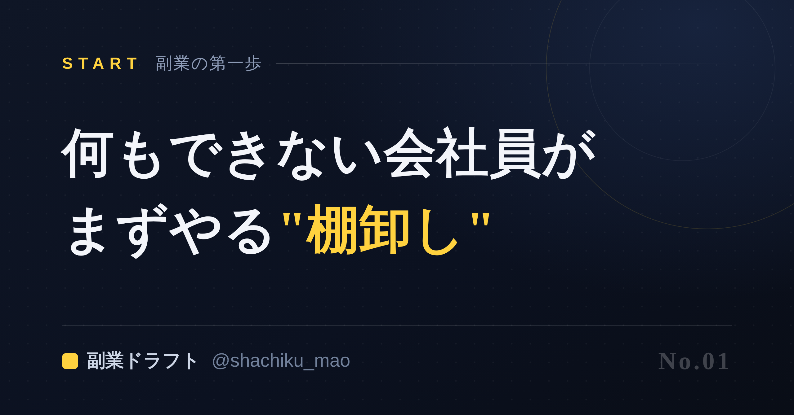
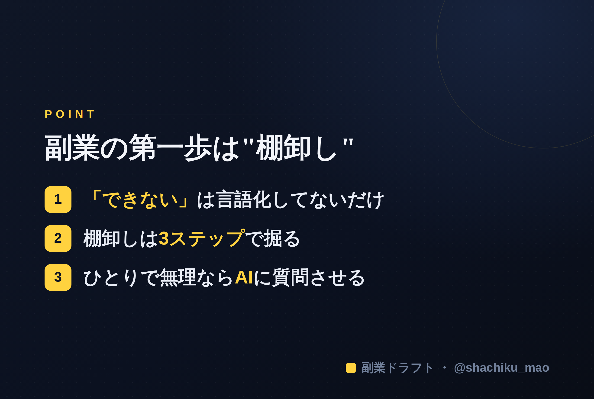

1. 「タイトルをコピー」→ note のタイトル欄に貼る
2. オレンジのラベルの画像（見出し画像）を note の見出し画像に設定
3. 「本文1をコピー」→ note本文に貼る
4. 青いラベルの位置（本文の途中）に、同じ名前の画像をアップして挿入
5. 「本文2をコピー」→ 続きを貼る
※ 見出しが普通の文字になったら、その行を選んで「大見出し」に設定してください

「副業したい。でも、自分に何ができるのか分からない」——数年前の私です。
スキルもない、実績もない、資格もない。SNSを開けば、キラキラした発信で稼いでいる人ばかり。「自分には何もない」と、そっとアプリを閉じる。その繰り返しでした。
でも、今なら分かります。あの頃の私に足りなかったのは"スキル"ではなく、"棚卸し"でした。
なぜ「何もできない」と感じるのか
多くの会社員が副業に踏み出せない理由は、才能の欠如ではありません。自分の持っているものが、自分では"当たり前"すぎて見えていないからです。
- 毎日やっている仕事の段取り
- 後輩からよく相談されること
- つい詳しく調べてしまうジャンル
- 過去に乗り越えた苦労
これらは全部、あなたにとっては「普通」でも、それを持っていない誰かにとっては価値です。強みは、探しに行くものではなく、すでに手の中にあるのに気づいていないだけなのです。
棚卸しの3ステップ
① 感謝された場面を思い出す 最近、人から「ありがとう」「助かった」と言われたことは？ そこにあなたの"提供できる価値"が隠れています。
② 頼られること・相談されることを書き出す 人は、あなたが得意なことを無意識に見抜いて相談してきます。相談の内容＝あなたの強みの入口です。
③ 時間を忘れて没頭できることを挙げる 苦にならないこと、つい調べてしまうこと。それは継続できる＝発信し続けられるテーマになります。
この3つを紙に書き出すだけで、「何もない」から「意外とあるかも」に変わります。
でも、自分ひとりだと言葉にできない
とはいえ、いざ書き出そうとすると手が止まる人がほとんどです。自分のことは、自分がいちばん見えない。 これは能力ではなく、視点の問題です。
だからこそ、誰かに質問してもらうのが最短ルートです。人に問われて答えるうちに、「あ、私こういうことなら話せるな」と、自分でも気づかなかった強みが言葉になっていきます。

ここまで読んで「自分ひとりで棚卸しするのは難しそう」と感じたら、AIが7つの質問であなたの強みを引き出し、そのままSNSやnoteの下書きまで作ってくれる 「副業ドラフト」 を試してみてください。無料で使えます。
👉 https://note-threadssf.onrender.com
まず"棚卸し"から。副業は、そこから静かに始まります。